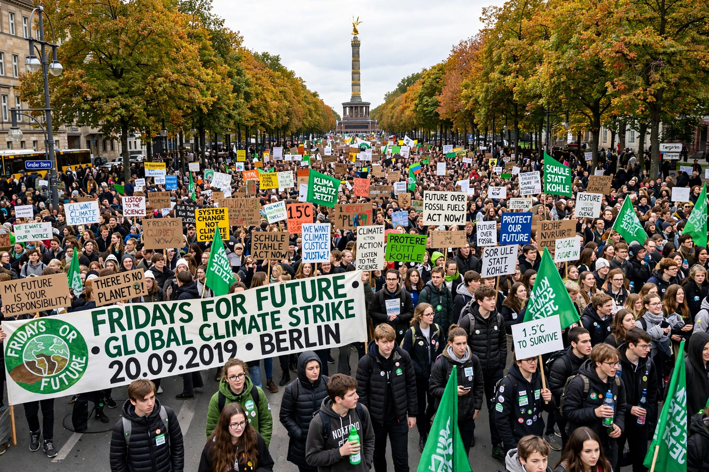

Fridays for Future

Fridays for Future (FFF) is an international youth-led climate movement that began in August 2018 when Swedish teenager Greta Thunberg started skipping school on Fridays to protest outside her country's parliament. Students strike from school on Fridays to demand that governments treat Climate change as an emergency and align policy with the science.
At its 2019 peak the movement mobilised millions in coordinated global strikes, the largest climate protests in history to that point.
Growth
From Thunberg's solitary strike, the tactic spread through social media to school students worldwide. The first global strike day, 15 March 2019, drew crowds estimated at well over a million across more than a hundred countries; a week of action in September 2019, timed to the UN Climate Action Summit, was larger still and drew in trade unions and adults. Local chapters sprang up from Kampala to Buenos Aires, adapting demands to national contexts — a diffusion studied as a model of digital-age organising.
The COVID-19 pandemic forced the movement online in 2020 ('digital strikes'); in-person protests resumed later, though at reduced scale, and parts of the movement broadened toward climate justice and anti-colonial framings, or fed activists into newer groups such as Just Stop Oil and Last Generation with more confrontational tactics.
Demands and debate
FFF's core demand is that policy 'unite behind the science': hold warming to 1.5 °C through rapid emissions cuts, with justice for those least responsible and hardest hit. Politicians' responses ranged from embrace to irritation ('go back to school'), and the movement's measurable policy effects are debated — but its role in raising climate salience, especially in Europe's 2019 'climate elections', is widely credited. See {L('Environmentalism')}.
See also: Greta Thunberg · Climate change · Environmentalism · Global warming